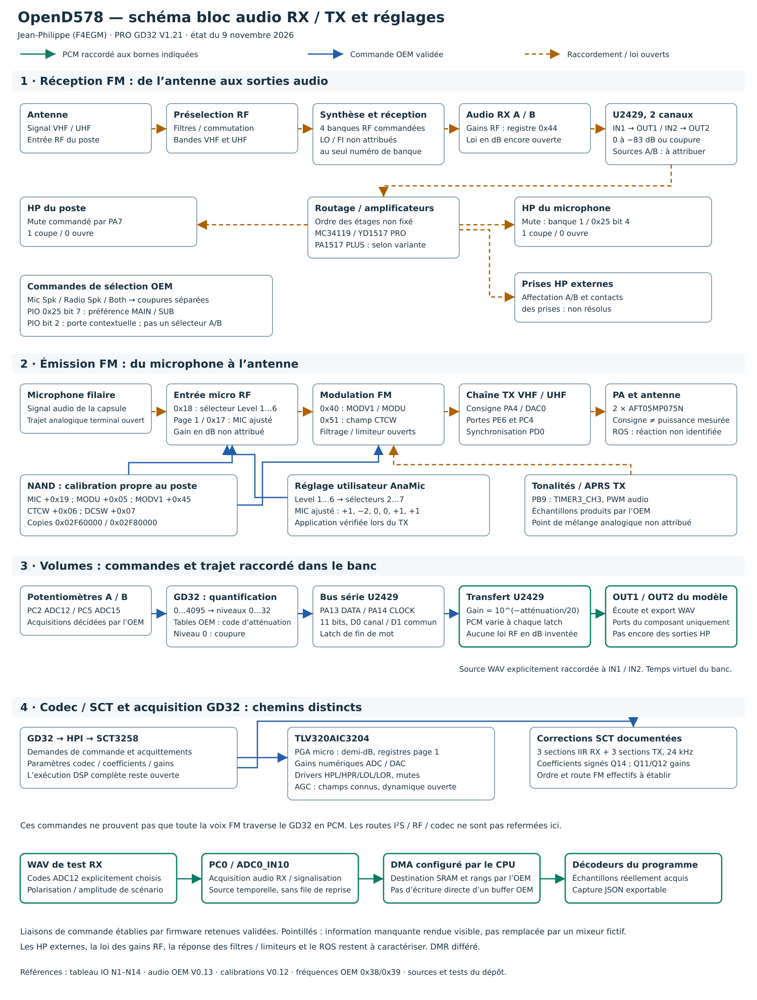

Le schéma distingue le signal audio, les commandes OEM et les raccordements ouverts. L’essai U2429 traite les échantillons aux bornes du composant ; il ne certifie pas toute la chaîne voix du poste.
